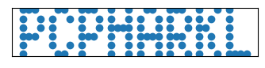

Python setup
Sys.setenv(
RETICULATE_PYTHON = here("..", "python", ".venv", "Scripts", "python.exe")
)
library(reticulate)
import numpy as np
import pandas as pd
import timeit
import matplotlib.pylab as plt
plt.switch_backend('agg') # needed for knitting in rmarkdownDay 11: Dumbo Octopus
day11 <- read_lines(here("_posts", "2021-12-11-advent-of-code-2021-days-11-15",
"day11-input.txt"))
day11
[1] "4781623888" "1784156114" "3265645122" "4371551414" "3377154886"
[6] "7882314455" "6421348681" "7175424287" "5488242184" "2448568261"Part 1
You enter a large cavern full of rare bioluminescent dumbo octopuses! They seem to not like the Christmas lights on your submarine, so you turn them off for now.
There are 100 octopuses arranged neatly in a 10 by 10 grid. Each octopus slowly gains energy over time and flashes brightly for a moment when its energy is full. Although your lights are off, maybe you could navigate through the cave without disturbing the octopuses if you could predict when the flashes of light will happen.
Each octopus has an energy level - your submarine can remotely measure the energy level of each octopus (your puzzle input).
The energy level of each octopus is a value between 0 and 9. You can model the energy levels and flashes of light in steps. During a single step, the following occurs:
- First, the energy level of each octopus increases by 1.
- Then, any octopus with an energy level greater than 9 flashes. This increases the energy level of all adjacent octopuses by 1, including octopuses that are diagonally adjacent. If this causes an octopus to have an energy level greater than 9, it also flashes. This process continues as long as new octopuses keep having their energy level increased beyond 9. (An octopus can only flash at most once per step.)
- Finally, any octopus that flashed during this step has its energy level set to 0, as it used all of its energy to flash.
Adjacent flashes can cause an octopus to flash on a step even if it begins that step with very little energy. Given the starting energy levels of the dumbo octopuses in your cavern, simulate 100 steps. How many total flashes are there after 100 steps?
Put the input into a 10x10 matrix:
And define a function that returns a point and its neighbors:
# The 9 neighbors of a point (including diagonals and the point itself)
d_coords <- cbind(c(0, 0, 0, -1, 1, -1, -1, 1, 1),
c(0, -1, 1, 0, 0, -1, 1, -1, 1))
get_neighbors <- function(row_col, max_row = 10, max_col = 10) {
neighbors <- apply(d_coords, 1, function(d) d + row_col) %>% t()
in_bounds <- (neighbors[,1] <= max_row) & (neighbors[,1] > 0) &
(neighbors[,2] <= max_col) & (neighbors[,2] > 0)
neighbors[in_bounds, , drop = FALSE]
}
Now loop over the 100 steps and count the flashes:
day11_part1 <- day11_mat
n_flashes <- 0
for (step in 1:100) {
day11_part1 <- day11_part1 + 1
# This matrix will keep track of which points have flashed in each step
flashing <- day11_part1 == 10
n_flashes <- n_flashes + sum(flashing)
neighbors <- apply(which(flashing, arr.ind = TRUE), 1,
get_neighbors, simplify = FALSE)
repeat {
# Keep track of newly flashing points for each iteration of neighbors
new_flashing <- matrix(FALSE, nrow = 10, ncol = 10)
for (neighbor in neighbors) {
day11_part1[neighbor] <- day11_part1[neighbor] + 1
new_flashing <- (!flashing & (day11_part1 == 10)) | new_flashing
}
if (sum(new_flashing) == 0) break
else {
n_flashes <- n_flashes + sum(new_flashing)
neighbors <- apply(which(new_flashing, arr.ind = TRUE), 1,
get_neighbors, simplify = FALSE)
flashing <- flashing | new_flashing
}
}
day11_part1[day11_part1 >= 10] <- 0
}
n_flashes
[1] 1713This solution took me way way too long to get right because of the simplify argument in apply being TRUE by default. So when I was collecting a list of neighbors around a single point:
[,1]
[1,] 1
[2,] 1
[3,] 2
[4,] 2
[5,] 1
[6,] 2
[7,] 1
[8,] 2I wouldn’t get a list as expected, unless setting simplify = FALSE:
apply(which(matrix(c(T, F, F, F), nrow = 2, ncol = 2), arr.ind = TRUE), 1,
get_neighbors, simplify = FALSE)
[[1]]
row col
[1,] 1 1
[2,] 1 2
[3,] 2 1
[4,] 2 2About an hour lost, and a lesson learned.
Python implementation:
day11_df = np.array([list(row) for row in r.day11], dtype = int)
def get_neighbor_coords(row, col, max_row = 10, max_col = 10):
neighbor_coords = [[row + d for d in [0, -1, 1, 0, 0, -1, -1, 1, 1]],
[col + d for d in [0, 0, 0, -1, 1, -1, 1, -1, 1]]]
neighbor_coords = np.array(neighbor_coords).T
in_bounds = (neighbor_coords[:, 0] >= 0) & \
(neighbor_coords[:, 0] < max_row) & \
(neighbor_coords[:, 1] >= 0) & \
(neighbor_coords[:, 1] < max_col)
return(neighbor_coords[in_bounds, :])
day11_part1 = day11_df.copy()
n_flashes = 0
for step in range(100):
day11_part1 += 1
flashing = day11_part1 == 10
n_flashes += flashing.sum()
flashing_loc = np.where(flashing)
neighbors = []
for row, col in zip(flashing_loc[0], flashing_loc[1]):
neighbors.append(get_neighbor_coords(row, col))
while True:
new_flashing = np.zeros((10, 10), dtype = bool)
for neighbor in neighbors:
for row,col in zip(neighbor[:,0], neighbor[:,1]):
day11_part1[row, col] += 1
new_flashing[row, col] = new_flashing[row, col] or \
(not flashing[row, col] and day11_part1[row, col] == 10)
if new_flashing.sum() == 0: break
else:
n_flashes += new_flashing.sum()
flashing_loc = np.where(new_flashing)
neighbors = []
for row, col in zip(flashing_loc[0], flashing_loc[1]):
neighbors.append(get_neighbor_coords(row, col))
flashing = flashing | new_flashing
day11_part1[day11_part1 >= 10] = 0
n_flashes1713Part 2
It seems like the individual flashes aren’t bright enough to navigate. However, you might have a better option: the flashes seem to be synchronizing!
If you can calculate the exact moments when the octopuses will all flash simultaneously, you should be able to navigate through the cavern. What is the first step during which all octopuses flash?
I can get this answer by just modifying the loop slightly:
day11_part2 <- day11_mat
flashing <- day11_part2 == 10
step <- 0
while (!all(flashing)) {
step <- step + 1
day11_part2 <- day11_part2 + 1
flashing <- day11_part2 == 10
neighbors <- apply(which(flashing, arr.ind = TRUE), 1,
get_neighbors, simplify = FALSE)
repeat {
new_flashing <- matrix(FALSE, nrow = 10, ncol = 10)
for (neighbor in neighbors) {
day11_part2[neighbor] <- day11_part2[neighbor] + 1
new_flashing <- (!flashing & (day11_part2 == 10)) | new_flashing
}
if (sum(new_flashing) == 0) break
else {
neighbors <- apply(which(new_flashing, arr.ind = TRUE), 1,
get_neighbors, simplify = FALSE)
flashing <- flashing | new_flashing
}
}
day11_part2[day11_part2 >= 10] <- 0
}
step
[1] 502Python:
day11_part2 = day11_df.copy()
step = 0
while not flashing.all():
step += 1
day11_part2 += 1
flashing = day11_part2 == 10
flashing_loc = np.where(flashing)
neighbors = []
for row, col in zip(flashing_loc[0], flashing_loc[1]):
neighbors.append(get_neighbor_coords(row, col))
while True:
new_flashing = np.zeros((10, 10), dtype = bool)
for neighbor in neighbors:
for row,col in zip(neighbor[:,0], neighbor[:,1]):
day11_part2[row, col] += 1
new_flashing[row, col] = new_flashing[row, col] or \
(not flashing[row, col] and day11_part2[row, col] == 10)
if new_flashing.sum() == 0: break
else:
flashing_loc = np.where(new_flashing)
neighbors = []
for row, col in zip(flashing_loc[0], flashing_loc[1]):
neighbors.append(get_neighbor_coords(row, col))
flashing = flashing | new_flashing
day11_part2[day11_part2 >= 10] = 0
step502Day 12: Passage Pathing
day12 <- read_lines(here("_posts", "2021-12-11-advent-of-code-2021-days-11-15",
"day12-input.txt"))
day12
[1] "rf-RL" "rf-wz" "wz-RL" "AV-mh" "end-wz" "end-dm"
[7] "wz-gy" "wz-dm" "cg-AV" "rf-AV" "rf-gy" "end-mh"
[13] "cg-gy" "cg-RL" "gy-RL" "VI-gy" "AV-gy" "dm-rf"
[19] "start-cg" "start-RL" "rf-mh" "AV-start" "qk-mh" "wz-mh" Part 1
With your submarine’s subterranean subsystems subsisting suboptimally, the only way you’re getting out of this cave anytime soon is by finding a path yourself. Not just a path - the only way to know if you’ve found the best path is to find all of them.
Fortunately, the sensors are still mostly working, and so you build a rough map of the remaining caves (your puzzle input).
Your goal is to find the number of distinct paths that start at start, end at end, and don’t visit small caves more than once. There are two types of caves: big caves (written in uppercase, like A) and small caves (written in lowercase, like b). It would be a waste of time to visit any small cave more than once, but big caves are large enough that it might be worth visiting them multiple times. So, all paths you find should visit small caves at most once, and can visit big caves any number of times.
How many paths through this cave system are there that visit small caves at most once?
First, put together a list of all the cave connections:
cave_connections <- tibble(paths = day12) %>%
separate(paths, into = c("cave1", "cave2"), "-")
cave_connections <- cave_connections %>%
# By adding the reverse connections, we have all bi-directional paths
bind_rows(cave_connections %>% rename(cave1 = cave2, cave2 = cave1)) %>%
# Paths can't end with start, or start with end
filter(cave1 != "end", cave2 != "start") %>%
arrange(cave1)
cave_connections
# A tibble: 42 x 2
cave1 cave2
<chr> <chr>
1 AV mh
2 AV gy
3 AV cg
4 AV rf
5 cg AV
6 cg gy
7 cg RL
8 dm rf
9 dm end
10 dm wz
# ... with 32 more rowsAll paths begin with the start cave, with these possible connections:
starting_paths <- cave_connections %>%
filter(cave1 == "start") %>%
rowwise() %>% # this rowwise() grouping is very important to the logic
transmute(start_cave = cave1, path = list(cave2),
end_cave = cave2)
starting_paths
# A tibble: 3 x 3
# Rowwise:
start_cave path end_cave
<chr> <list> <chr>
1 start <chr [1]> cg
2 start <chr [1]> RL
3 start <chr [1]> AV Lastly, a helper function to identify small caves (I’m not aware of a base R function to check for case):
is_lower <- function(x) {
tolower(x) == x
}
My strategy is to continuously loop, add new caves by left_joining cave_connections, add new caves to the path list, and remove paths which go through a small cave twice. The loop will break when there was no change from the previous iteration:
tic()
cave_paths <- starting_paths
repeat {
prev_paths <- cave_paths
cave_paths <- cave_paths %>%
left_join(
cave_connections, by = c("end_cave" = "cave1")
) %>%
# Remove paths which visit a small cave twice
filter(
!(is_lower(cave2) & (cave2 %in% path))
) %>%
# Add the new caves to the paths, unless NA (already at the end)
mutate(
path = ifelse(!is.na(cave2), list(c(path, cave2)), list(path)),
end_cave = ifelse(!is.na(cave2), cave2, end_cave)
) %>%
select(-cave2)
if (all_equal(prev_paths, cave_paths) == TRUE) break
}
toc()
1.24 sec elapsed3421 unique paths were identified:
# A tibble: 3,421 x 1
# Rowwise:
path
<chr>
1 start,cg,AV,mh,AV,gy,RL,rf,RL,wz,dm,end
2 start,cg,AV,mh,AV,gy,RL,rf,RL,wz,end
3 start,cg,AV,mh,AV,gy,RL,rf,wz,dm,end
4 start,cg,AV,mh,AV,gy,RL,rf,wz,end
5 start,cg,AV,mh,AV,gy,RL,rf,dm,end
6 start,cg,AV,mh,AV,gy,RL,rf,dm,wz,end
7 start,cg,AV,mh,AV,gy,RL,wz,RL,rf,dm,end
8 start,cg,AV,mh,AV,gy,RL,wz,dm,end
9 start,cg,AV,mh,AV,gy,RL,wz,rf,dm,end
10 start,cg,AV,mh,AV,gy,RL,wz,end
# ... with 3,411 more rowsFor the Python solution, I’ll use pandas:
cave_connections = pd.DataFrame([path.split('-') for path in r.day12],
columns = ['cave1', 'cave2'])
cave_connections = cave_connections.append(
cave_connections.rename(columns = {'cave1': 'cave2', 'cave2': 'cave1'}),
ignore_index = True
).query("cave2 != 'start'").query("cave1 != 'end'")
starting_paths = cave_connections.query("cave1 == 'start'") \
.rename(columns = {'cave1': 'start_cave', 'cave2': 'end_cave'})
starting_paths = starting_paths.assign(path = starting_paths['end_cave'])def day12_part1():
n_paths = 0
cave_paths = starting_paths.copy()
while True:
prev_paths = cave_paths.copy()
cave_paths = pd.merge(cave_paths, cave_connections,
left_on = 'end_cave', right_on = 'cave1', how = 'left')
# Remove paths that go through a small cave twice
remove_paths = [str.islower(c) and (c in p.split(',')) \
for c, p in zip(cave_paths.cave2, cave_paths.path)]
cave_paths.drop(cave_paths[remove_paths].index, inplace = True)
# Drop paths that have reached the end, and add to the count
remove_paths = cave_paths.cave2 == 'end'
n_paths += remove_paths.sum()
cave_paths.drop(cave_paths[remove_paths].index, inplace = True)
# Re-structure the data frame for the next iteration
cave_paths = cave_paths \
.assign(path = lambda df: df['path'] + ',' + df['cave2']) \
.assign(end_cave = cave_paths['cave2']) \
.filter(items = ['start_cave', 'path', 'end_cave'])
if cave_paths.equals(prev_paths): break
print(n_paths)
timeit.repeat("day12_part1()", "from __main__ import day12_part1",
repeat = 1, number = 1)3421
[0.09691650000000074]Part 2
After reviewing the available paths, you realize you might have time to visit a single small cave twice. Specifically, big caves can be visited any number of times, a single small cave can be visited at most twice, and the remaining small caves can be visited at most once. However, the caves named start and end can only be visited exactly once each: once you leave the start cave, you may not return to it, and once you reach the end cave, the path must end immediately.
Given these new rules, how many paths through this cave system are there?
I will slightly modify the loop from part 1 to check if a small cave has been visited twice:
tic()
cave_paths <- starting_paths %>% mutate(small_cave_twice = FALSE)
repeat {
prev_paths <- cave_paths
cave_paths <- cave_paths %>%
left_join(
cave_connections, by = c("end_cave" = "cave1")
) %>%
# Remove paths which visit a small cave twice more than once
filter(
!(small_cave_twice & is_lower(cave2) & (cave2 %in% path))
) %>%
# Add the new caves to the paths, unless NA (already at the end)
mutate(
path = ifelse(!is.na(cave2), list(c(path, cave2)), list(path)),
end_cave = ifelse(!is.na(cave2), cave2, end_cave)
) %>%
select(-cave2) %>%
# Check to see if a small cave has been visited twice
mutate(
small_cave_twice = any(table(path[is_lower(path)]) > 1)
)
if (all_equal(prev_paths, cave_paths) == TRUE) break
}
toc()
107.11 sec elapsed84870 unique paths were identified:
# A tibble: 84,870 x 1
# Rowwise:
path
<chr>
1 start,cg,AV,mh,AV,mh,AV,gy,RL,rf,RL,wz,dm,end
2 start,cg,AV,mh,AV,mh,AV,gy,RL,rf,RL,wz,end
3 start,cg,AV,mh,AV,mh,AV,gy,RL,rf,wz,dm,end
4 start,cg,AV,mh,AV,mh,AV,gy,RL,rf,wz,end
5 start,cg,AV,mh,AV,mh,AV,gy,RL,rf,dm,end
6 start,cg,AV,mh,AV,mh,AV,gy,RL,rf,dm,wz,end
7 start,cg,AV,mh,AV,mh,AV,gy,RL,wz,RL,rf,dm,end
8 start,cg,AV,mh,AV,mh,AV,gy,RL,wz,dm,end
9 start,cg,AV,mh,AV,mh,AV,gy,RL,wz,rf,dm,end
10 start,cg,AV,mh,AV,mh,AV,gy,RL,wz,end
# ... with 84,860 more rowsThis solution was obviously inefficient, taking about 2 minutes to run.
.. every problem has a solution that completes in at most 15 seconds on ten-year-old hardware.
Let’s see if Python is any faster:
from collections import Counter
def day12_part2():
n_paths = 0
cave_paths = starting_paths.copy()
while True:
prev_paths = cave_paths.copy()
cave_paths = pd.merge(cave_paths, cave_connections,
left_on = 'end_cave', right_on = 'cave1', how = 'left')
# Drop paths that have reached the end, and add to the count
remove_paths = cave_paths.cave2 == 'end'
n_paths += remove_paths.sum()
cave_paths.drop(cave_paths[remove_paths].index, inplace = True)
# Re-structure the data frame for the next iteration
cave_paths = cave_paths \
.assign(path = lambda df: df['path'] + ',' + df['cave2']) \
.assign(end_cave = cave_paths['cave2']) \
.filter(items = ['start_cave', 'path', 'end_cave'])
# Get a list of the caves for each path
cave_list = [path.split(',') for path in cave_paths.path]
# Filter the list down to just small caves
cave_list = [[cave for cave in cl if str.islower(cave)] \
for cl in cave_list]
# Frequency counts of the small caves
cave_list = [list(Counter(cl).values()) for cl in cave_list]
# Determine the illegal paths
cave_list = [cc.count(2) > 1 or cc.count(3) > 0 for cc in cave_list]
# Finally, remove illegal paths
cave_paths.drop(cave_paths[cave_list].index, inplace = True)
if cave_paths.equals(prev_paths): break
print(n_paths)
timeit.repeat("day12_part2()", "from __main__ import day12_part2",
repeat = 1, number = 1)84870
[6.6000491000000014]Much, much faster.
Day 13: Transparent Origami
day13 <- read_lines(here("_posts", "2021-12-11-advent-of-code-2021-days-11-15",
"day13-input.txt"))
head(day13)
[1] "323,305" "512,845" "780,175" "308,50" "266,604" "152,425"tail(day13)
[1] "fold along x=81" "fold along y=55" "fold along x=40"
[4] "fold along y=27" "fold along y=13" "fold along y=6" Part 1
You reach another volcanically active part of the cave. It would be nice if you could do some kind of thermal imaging so you could tell ahead of time which caves are too hot to safely enter.
Fortunately, the submarine seems to be equipped with a thermal camera! When you activate it, you are greeted with:
Congratulations on your purchase! To activate this infrared thermal imaging camera system, please enter the code found on page 1 of the manual.
Apparently, the Elves have never used this feature. To your surprise, you manage to find the manual; as you go to open it, page 1 falls out. It’s a large sheet of transparent paper! The transparent paper is marked with random dots and includes instructions on how to fold it up (your puzzle input).
The first section is a list of dots on the transparent paper.
0,0represents the top-left coordinate. The first value,x, increases to the right. The second value,y, increases downward. So, the coordinate3,0is to the right of0,0, and the coordinate0,7is below0,0.Then, there is a list of fold instructions. Each instruction indicates a line on the transparent paper and wants you to fold the paper up (for horizontal
y=...lines) or left (for verticalx=...lines).How many dots are visible after completing just the first fold instruction on your transparent paper?
Separate the dots and the folding instructions:
day13_dots <- day13[1:(which(day13 == "") - 1)]
day13_folds <- day13[(which(day13 == "") + 1):length(day13)] %>%
str_remove("fold along ") %>%
strsplit("=")
head(day13_dots); head(day13_folds, 3)
[1] "323,305" "512,845" "780,175" "308,50" "266,604" "152,425"[[1]]
[1] "x" "655"
[[2]]
[1] "y" "447"
[[3]]
[1] "x" "327"Model the paper as a matrix of booleans, and mark the dots:
dots <- strsplit(day13_dots, ",") %>%
map(as.integer) %>%
reduce(rbind, deparse.level = 0)
# Because R indices start at 1, not 0, adjust each point by 1
dots <- dots + 1
# Also, because the coordinates are in (x,y) order, we need to reverse these
# points so that they may be used as (row,col) input
dots <- dots[,c(2, 1)]
# Model the sheet of paper as a matrix big enough for the points
paper <- matrix(FALSE, nrow = max(dots[,1]), ncol = max(dots[,2]))
# Mark the dots on the paper
paper[dots] <- TRUE
Fold once, using the first instruction:
paper_part1 <- paper
fold <- day13_folds[[1]]
fold_dir <- fold[1]
fold_pos <- as.integer(fold[2]) + 1
if (fold_dir == "x") {
half1 <- paper_part1[, 1:(fold_pos - 1)]
half2 <- paper_part1[, (fold_pos + 1):ncol(paper_part1)]
# Reverse the half
half2 <- half2[, ncol(half2):1]
} else {
half1 <- paper_part1[1:(fold_pos - 1), ]
half2 <- paper_part1[(fold_pos + 1):nrow(paper_part1), ]
half2 <- half2[nrow(half2):1, ]
}
paper_part1 <- half1 | half2
# Count the sum of visible dots
sum(paper_part1)
[1] 671In Python with numpy arrays:
dots = r.day13[0:r.day13.index('')]
dots = np.array([d.split(',') for d in dots], dtype = int)
dots = np.flip(dots, axis = 1)
folds = r.day13[(r.day13.index('') + 1):]
folds = [fold.replace('fold along ', '') for fold in folds]
folds = [fold.split('=') for fold in folds]
paper = np.zeros((dots[:, 0].max() + 1, dots[:, 1].max() + 1), dtype = bool)
for dot in dots:
paper[tuple(dot)] = True
paper_part1 = paper.copy()
fold = folds[0]
fold_dir = fold[0]
fold_loc = int(fold[1])
half1 = paper_part1[:, 0:fold_loc]
half2 = paper_part1[:, (fold_loc + 1):]
half2 = np.flip(half2, axis = 1)
paper_part1 = half1 | half2
paper_part1.sum()671Part 2
Finish folding the transparent paper according to the instructions. The manual says the code is always eight capital letters. What code do you use to activate the infrared thermal imaging camera system?
Now loop over each fold:
paper_part2 <- paper
for (fold in day13_folds) {
fold_dir <- fold[1]
fold_pos <- as.integer(fold[2]) + 1
if (fold_dir == "x") {
half1 <- paper_part2[, 1:(fold_pos - 1)]
half2 <- paper_part2[, (fold_pos + 1):ncol(paper_part2)]
# Reverse the half
half2 <- half2[, ncol(half2):1]
} else {
half1 <- paper_part2[1:(fold_pos - 1), ]
half2 <- paper_part2[(fold_pos + 1):nrow(paper_part2), ]
# Reverse the half
half2 <- half2[nrow(half2):1, ]
}
paper_part2 <- half1 | half2
}
And use a plot to read the pattern of dots:
paper_part2 %>%
as_tibble() %>%
mutate(row_num = 1:n()) %>%
pivot_longer(cols = -row_num, names_to = "col_num") %>%
mutate(col_num = as.integer(str_remove(col_num, "V"))) %>%
filter(value) %>%
ggplot(aes(x = col_num, y = row_num)) +
geom_point(size = 4) +
scale_y_reverse() +
theme_void()

And in matplotlib:
paper_part2 = paper.copy()
for fold in folds:
fold_dir = fold[0]
fold_loc = int(fold[1])
if fold_dir == "y":
half1 = paper_part2[0:fold_loc, :]
half2 = paper_part2[(fold_loc + 1):, :]
half2 = np.flip(half2, axis = 0)
else:
half1 = paper_part2[:, 0:fold_loc]
half2 = paper_part2[:, (fold_loc + 1):]
half2 = np.flip(half2, axis = 1)
paper_part2 = half1 | half2
draw_points = np.where(paper_part2 == True)
fig, ax = plt.subplots()
ax.scatter(draw_points[1], -draw_points[0])
ax.get_yaxis().set_visible(False)
ax.get_xaxis().set_visible(False)
fig.set_size_inches(4, 0.8)
fig.savefig('day13-fig.png', bbox_inches = 'tight')
Looks like PCPHARKL.
Day 14: Extended Polymerization
day14 <- read_lines(here("_posts", "2021-12-11-advent-of-code-2021-days-11-15",
"day14-input.txt"))
head(day14)
[1] "PBFNVFFPCPCPFPHKBONB" ""
[3] "KK -> S" "FO -> B"
[5] "PP -> O" "HN -> S" Part 1
The incredible pressures at this depth are starting to put a strain on your submarine. The submarine has polymerization equipment that would produce suitable materials to reinforce the submarine, and the nearby volcanically-active caves should even have the necessary input elements in sufficient quantities.
The submarine manual contains instructions for finding the optimal polymer formula; specifically, it offers a polymer template and a list of pair insertion rules (your puzzle input). You just need to work out what polymer would result after repeating the pair insertion process a few times.
The first line is the polymer template - this is the starting point of the process.
The following section defines the pair insertion rules. A rule like
AB -> Cmeans that when elementsAandBare immediately adjacent, elementCshould be inserted between them. These insertions all happen simultaneously.Apply 10 steps of pair insertion to the polymer template and find the most and least common elements in the result. What do you get if you take the quantity of the most common element and subtract the quantity of the least common element?
Separate the polymer template from the pair insertion instructions:
polymer_template <- day14[1]
pair_insertions <- day14[-c(1, 2)]
pairs <- map_chr(pair_insertions, ~strsplit(.x, " -> ")[[1]][1])
insertions <- map_chr(pair_insertions, ~strsplit(.x, " -> ")[[1]][2])
# Also get the three-letter replacement for the two-letter pairs
insertions3 <- map2_chr(
pairs, insertions,
~paste0(substr(.x, 1, 1), .y, substr(.x, 2, 2))
)
My strategy for this part is to find the pairs at each step, then replace pairs with a numeric placeholder, e.g. KK -> K1K. Then replace the numeric placeholders with the three-letter combination, e.g. K1K -> KSK. By doing the replacements in this way, I avoid accidentally finding new pairs during a single step.
polymer_template_part1 <- polymer_template
for (step in 1:10) {
# Find the pair insertions relevant to this step
pair_idx <- map_lgl(pairs, ~str_detect(polymer_template_part1, .x))
step_pairs <- pairs[pair_idx]
step_insertions <- insertions3[pair_idx]
for (i in seq_along(step_pairs)) {
# While there are still pairs to replace, continuously replace them
while (str_detect(polymer_template_part1, step_pairs[i])) {
polymer_template_part1 <-
str_replace_all(polymer_template_part1, step_pairs[i],
paste0(substr(step_pairs[i], 1, 1), i,
substr(step_pairs[i], 2, 2)))
}
}
# Use a named list as the input to str_replace_all
names(step_insertions) <-
paste0(map_chr(step_pairs, substr, 1, 1),
seq_along(step_insertions),
map_chr(step_pairs, substr, 2, 2))
# While there are still numeric placeholders, continually replace them
while (str_detect(polymer_template_part1, "\\d+")) {
polymer_template_part1 <- str_replace_all(polymer_template_part1,
step_insertions)
}
}
str_trunc(polymer_template_part1, width = 80)
[1] "POOVOPVHOKPNVPHPOSKBPONNVOPFHFPOOVSSKCBVPOOKNONNVHOKPOFOHSFNPOOVOPVKSBSSKSCHB..."Note that I use while loops at the str_replace_all steps to account for triple letter sequences. For example, if there is a three-letter sequence PPP, then a single pass of str_replace_all will result in POPP. On the second pass, the correct POPOP is returned.
Now count the letter/element frequency and subtract the most from the least frequent:
B C F H K N O P S V
2602 1916 1202 1240 2600 1744 1844 976 2979 2354 as.numeric(part1_freq[part1_freq == max(part1_freq)]) -
as.numeric(part1_freq[part1_freq == min(part1_freq)])
[1] 2003Python:
polymer_template = r.day14[0]
pair_insertions = [x.split(' -> ') for x in r.day14[2:]]
pairs = [p[0] for p in pair_insertions]
insertions = [p[1] for p in pair_insertions]
insertions3 = [p[0] + i + p[1] for p, i in zip(pairs, insertions)]polymer_template_part1 = polymer_template
for step in range(10):
step_pairs = [p for p in pairs if p in polymer_template_part1]
step_insertions = [i for p, i in zip(pairs, insertions3) \
if p in polymer_template_part1]
placeholders = [p[0] + str(i) + p[1] for i, p in enumerate(step_pairs)]
for i, (pair, placeholder) in enumerate(zip(step_pairs, placeholders)):
while pair in polymer_template_part1:
polymer_template_part1 = polymer_template_part1.replace(
pair, placeholder
)
for i, (insertion, placeholder) in enumerate(zip(step_insertions, placeholders)):
while placeholder in polymer_template_part1:
polymer_template_part1 = polymer_template_part1.replace(
placeholder, insertion
)
from collections import Counter
element_counts = Counter(polymer_template_part1)
max(element_counts.values()) - min(element_counts.values())2003Part 2
The resulting polymer isn’t nearly strong enough to reinforce the submarine. You’ll need to run more steps of the pair insertion process; a total of 40 steps should do it.
Apply 40 steps of pair insertion to the polymer template and find the most and least common elements in the result. What do you get if you take the quantity of the most common element and subtract the quantity of the least common element?
I probably should have seen this coming. The polymer from part 1 consists of 19457 elements, and will continue to grow exponentially and take too long to reach 40 steps. Similar to the lanternfish puzzle from day 6, I will need to instead find a way to count unique inputs (pairs of the polymer chain), then count their unique outputs at each step.
Consider each pair KK, FO, PP, etc. Each pair results in two new pairs from the same list after inserting a letter in between. For example, FO becomes FBO which consists of the pairs FB and BO. For each unique pair, compile the resulting pairs after insertion:
pair_transitions <-
tibble(pair = pairs, element = insertions, insertion3 = insertions3) %>%
mutate(
new_pairs = map(insertion3, ~str_sub(.x, start = 1:2, end = 2:3))
)
pair_transitions %>%
mutate(new_pairs = map_chr(new_pairs, str_c, collapse = ", "))
# A tibble: 100 x 4
pair element insertion3 new_pairs
<chr> <chr> <chr> <chr>
1 KK S KSK KS, SK
2 FO B FBO FB, BO
3 PP O POP PO, OP
4 HN S HSN HS, SN
5 CN H CHN CH, HN
6 VH P VPH VP, PH
7 BK B BBK BB, BK
8 VC N VNC VN, NC
9 CB H CHB CH, HB
10 OC K OKC OK, KC
# ... with 90 more rowsThen it is a simple matter of counting the starting pairs, and counting the new pairs after each step. I will also keep a running count of the elements inserted at each step to calculate the puzzle solution at the end:
template_pairs <-
tibble(pair = str_sub(polymer_template,
start = 1:(nchar(polymer_template) - 1),
end = 2:nchar(polymer_template))) %>%
count(pair)
element_counts <- tibble(element = strsplit(polymer_template, "")[[1]]) %>%
count(element)
part2_pairs <- template_pairs
for (step in 1:40) {
part2_pairs <- part2_pairs %>% left_join(pair_transitions, by = "pair")
# Update the count with newly inserted elements
element_counts <- element_counts %>%
bind_rows(part2_pairs %>% select(element, n)) %>%
group_by(element) %>%
summarise(n = sum(n), .groups = "drop")
# Update the count of each pair
part2_pairs <- part2_pairs %>%
unnest(new_pairs) %>%
select(pair = new_pairs, n) %>%
group_by(pair) %>%
summarise(n = sum(n), .groups = "drop")
}
element_counts %>% arrange(desc(n))
# A tibble: 10 x 2
element n
<chr> <dbl>
1 B 3225985458057
2 S 3148585011712
3 K 2929014164222
4 C 2455634949915
5 V 2288592953070
6 N 1804584793307
7 O 1728660985220
8 H 1278822335904
9 F 1081498818392
10 P 949341457946Substract the highest from the lowest frequency:
element_counts %>%
summarise(freq_diff = max(n) - min(n)) %>%
pull(freq_diff) %>%
format(scientific = FALSE)
[1] "2276644000111"For the Python solution, I’ll make use of Counter:
# Use a dictionary to keep track of insertions
insertions_dict = {}
for line in r.day14[2:]:
pair, insertion = line.split(' -> ')
insertions_dict[pair] = insertion
# Get the pairs in the initial polymer template
pairs = [polymer_template[i:(i+2)] for i in range(len(polymer_template) - 1)]
# And count them
pairs_counter = Counter(pairs)
# Also count the elements
elements_counter = Counter(polymer_template)
for _ in range(40):
# Note that you have to use a copy() of the counter dict or get this error:
# RuntimeError: dictionary changed size during iteration
for (pair, n) in pairs_counter.copy().items():
# Count the element
element = insertions_dict[pair]
elements_counter[element] += n
# Remove the pair
pairs_counter[pair] -= n
# Add the two new pairs
pairs_counter[pair[0] + element] += n
pairs_counter[element + pair[1]] += n
max(elements_counter.values()) - min(elements_counter.values())2276644000111Day 15: Chiton
day15 <- read_lines(here("_posts", "2021-12-11-advent-of-code-2021-days-11-15",
"day15-input.txt"))
head(day15) %>% str_trunc(80)
[1] "12776122936633781176185498286799182748224953118419971897398421899799299235197..."
[2] "92713931315226352311349238884957392434986922639227666817298559243291574818922..."
[3] "83869289488851157392391212674898519944959981574137912921281267869869843197667..."
[4] "85874654268366955439879656653199236979788986646885977979777566495248418799743..."
[5] "36134522971533492118254181989753412121178826432221791653999968864289729863518..."
[6] "27118868364598999966973486545895189297176529193649712669891576131725835721399..."Part 1
You’ve almost reached the exit of the cave, but the walls are getting closer together. Your submarine can barely still fit, though; the main problem is that the walls of the cave are covered in chitons, and it would be best not to bump any of them.
The cavern is large, but has a very low ceiling, restricting your motion to two dimensions. The shape of the cavern resembles a square; a quick scan of chiton density produces a map of risk level throughout the cave (your puzzle input).
You start in the top left position, your destination is the bottom right position, and you cannot move diagonally. The number at each position is its risk level; to determine the total risk of an entire path, add up the risk levels of each position you enter (that is, don’t count the risk level of your starting position unless you enter it; leaving it adds no risk to your total). Your goal is to find a path with the lowest total risk.
What is the lowest total risk of any path from the top left to the bottom right?
Put the risk map into a matrix, and define a function to retrieve neighboring points:
risk_map <- day15 %>%
strsplit("") %>%
map(as.integer) %>%
reduce(rbind, deparse.level = 0)
d_coords <- cbind(c(0, 0, -1, 1),
c(-1, 1, 0, 0))
get_neighbors <- function(row, col,
max_row = nrow(risk_map), max_col = ncol(risk_map)) {
nx <- row + d_coords[,1]
ny <- col + d_coords[,2]
in_bounds <- (nx <= max_row) & (nx > 0) & (ny <= max_col) & (ny > 0)
cbind(nx[in_bounds], ny[in_bounds])
}
I knew this problem wouldn’t be feasible by brute force (or at least part 2 wouldn’t be), but couldn’t come up with a non-naive method. Turning to the internet for a hint, I found Dijkstra’s algorithm for finding the shortest path between two nodes in a graph. Following along with the psuedocode, here is my implementation with R matrices:
dist <- matrix(Inf, nrow = nrow(risk_map), ncol = ncol(risk_map))
# Set the starting point
dist[1, 1] <- 0
visited <- matrix(FALSE, nrow = nrow(risk_map), ncol = ncol(risk_map))
while (!all(visited)) {
# Get unvisited points
unvisited <- which(!visited, arr.ind = TRUE)
# Find the unvisited point with the minimum distance
min_dist <- unvisited[dist[unvisited] == min(dist[unvisited]), , drop = FALSE]
# Mark this point as visited
visited[min_dist[1,1], min_dist[1,2]] <- TRUE
# Get neighbors of the point
neighbors <- get_neighbors(min_dist[1,1], min_dist[1,2],
nrow(dist), ncol(dist))
# But exclude ones that have been visited
neighbors <- neighbors[!visited[neighbors], , drop = FALSE]
for (n in seq_len(nrow(neighbors))) {
nr <- neighbors[n, 1]
nc <- neighbors[n, 2]
dist_possible <- dist[min_dist[1,1], min_dist[1,2]] + risk_map[nr, nc]
if (dist_possible < dist[nr, nc]) {
dist[nr, nc] <- dist_possible
}
}
# If found the target point (bottom right corner) then stop
if (min_dist[1,1] == nrow(dist) & min_dist[1,2] == ncol(dist)) break
}
Now I just retrieve the distance (i.e. accumulated risk) at the target point (the bottom right):
Part 2
Now that you know how to find low-risk paths in the cave, you can try to find your way out.
The entire cave is actually five times larger in both dimensions than you thought; the area you originally scanned is just one tile in a 5x5 tile area that forms the full map. Your original map tile repeats to the right and downward; each time the tile repeats to the right or downward, all of its risk levels are 1 higher than the tile immediately up or left of it. However, risk levels above 9 wrap back around to 1.
Using the full map, what is the lowest total risk of any path from the top left to the bottom right?
Assemble the full risk map:
risk_map_part2 <- map(0:4, ~ risk_map + .x) %>%
reduce(rbind)
risk_map_part2 <- map(0:4, ~ risk_map_part2 + .x) %>%
reduce(cbind)
risk_map_part2 <- risk_map_part2 %% 9
# The modulo operator returns 0 if a value = 9, but we want 9
risk_map_part2[risk_map_part2 == 0] <- 9
max_row <- nrow(risk_map_part2)
max_col <- ncol(risk_map_part2)
This might push the limitations of my algorithm implementation, but I’ll give it a try (and print out the runtime):
tic()
while (!all(visited)) {
# Get unvisited points
unvisited <- which(!visited, arr.ind = TRUE)
# Find the unvisited point with the minimum distance
min_dist <- unvisited[dist[unvisited] == min(dist[unvisited]), , drop = FALSE]
# Mark this point as visited
visited[min_dist[1,1], min_dist[1,2]] <- TRUE
# Get neighbors of the point
neighbors <- get_neighbors(min_dist[1,1], min_dist[1,2], max_row, max_col)
# But exclude ones that have been visited
neighbors <- neighbors[!visited[neighbors], , drop = FALSE]
for (n in seq_len(nrow(neighbors))) {
nr <- neighbors[n, 1]
nc <- neighbors[n, 2]
dist_possible <- dist[min_dist[1,1], min_dist[1,2]] + risk_map_part2[nr, nc]
if (dist_possible < dist[nr, nc]) {
dist[nr, nc] <- dist_possible
}
}
# If found the target point (bottom right corner) then stop
if (min_dist[1,1] == nrow(dist) & min_dist[1,2] == ncol(dist)) break
}
toc()
1834.68 sec elapsedAbout 30 minutes, which is pretty bad.
Stats
Here are my personal stats for days 10-15:
tibble::tribble(
~Part, ~Day, ~Time, ~Rank, ~Score,
1, 15, "15:00:27", 22738, 0,
2, 15, "16:34:36", 19838, 0,
1, 14, "14:42:51", 32640, 0,
2, 14, "15:09:24", 24583, 0,
1, 13, "11:55:14", 26780, 0,
2, 13, "12:00:15", 25708, 0,
1, 12, "10:15:12", 21781, 0,
2, 12, "10:27:19", 19557, 0,
1, 11, "12:25:31", 27526, 0,
2, 11, "12:31:12", 27190, 0
) %>%
select(-Score) %>%
pivot_wider(names_from = Part, values_from = c(Time, Rank),
names_glue = "Part {Part}_{.value}") %>%
mutate(
`Time between parts` = as.numeric(hms(`Part 2_Time`) - hms(`Part 1_Time`),
"minutes") %>% round(1)
) %>%
gt() %>%
tab_spanner_delim(delim = "_", split = "first")
| Day | Part 1 | Part 2 | Time between parts | ||
|---|---|---|---|---|---|
| Time | Rank | Time | Rank | ||
| 15 | 15:00:27 | 22738 | 16:34:36 | 19838 | 94.2 |
| 14 | 14:42:51 | 32640 | 15:09:24 | 24583 | 26.6 |
| 13 | 11:55:14 | 26780 | 12:00:15 | 25708 | 5.0 |
| 12 | 10:15:12 | 21781 | 10:27:19 | 19557 | 12.1 |
| 11 | 12:25:31 | 27526 | 12:31:12 | 27190 | 5.7 |
And here is my position on the private leaderboard:
library(httr)
leaderboard <- httr::GET(
url = "https://adventofcode.com/2021/leaderboard/private/view/1032765.json",
httr::set_cookies(session = Sys.getenv("AOC_COOKIE"))
) %>%
content() %>%
as_tibble() %>%
unnest_wider(members) %>%
arrange(desc(local_score)) %>%
transmute(
Rank = 1:n(), Name = name, Score = local_score, Stars = stars
)
leaderboard %>%
gt() %>%
text_transform(
locations = cells_body(columns = Stars),
fn = function(stars_col) {
map_chr(stars_col,
~html(paste0(.x, fontawesome::fa('star', fill = 'gold'))))
}
) %>%
cols_align("left") %>%
tab_style(
style = list(cell_text(weight = "bold")),
locations = cells_body(
rows = (Name == "taylordunn")
)
) %>%
tab_options(container.height = 500)
| Rank | Name | Score | Stars |
|---|---|---|---|
| 1 | Emil Hvitfeldt | 3806 | 30 |
| 2 | David Robinson | 3768 | 30 |
| 3 | Colin Rundel | 3768 | 30 |
| 4 | trang1618 | 3729 | 30 |
| 5 | @ClareHorscroft | 3728 | 30 |
| 6 | @_TanHo | 3683 | 30 |
| 7 | Ildikó Czeller | 3564 | 30 |
| 8 | dhimmel | 3504 | 29 |
| 9 | Jarosław Nirski | 3492 | 30 |
| 10 | Jonathan Spring | 3392 | 30 |
| 11 | pritikadasgupta | 3381 | 30 |
| 12 | Josh Gray | 3258 | 30 |
| 13 | Jean-Rubin | 3172 | 30 |
| 14 | gpecci | 3158 | 27 |
| 15 | Anna Fergusson | 3003 | 28 |
| 16 | ashbaldry | 2993 | 30 |
| 17 | Tom Jemmett | 2982 | 30 |
| 18 | Riinu Pius | 2954 | 30 |
| 19 | mbjoseph | 2838 | 30 |
| 20 | Melinda Tang | 2824 | 27 |
| 21 | john-b-edwards | 2751 | 24 |
| 22 | @Mid1995Sed | 2745 | 30 |
| 23 | Calum You | 2688 | 30 |
| 24 | patelis | 2682 | 30 |
| 25 | Farhan Reynaldo | 2631 | 28 |
| 26 | Jaap Walhout | 2600 | 29 |
| 27 | Sherry Zhang | 2592 | 24 |
| 28 | @_mnar99 | 2577 | 24 |
| 29 | Jim Leach | 2544 | 30 |
| 30 | martigso | 2538 | 30 |
| 31 | hrushikeshrv | 2504 | 24 |
| 32 | long39ng | 2494 | 30 |
| 33 | Tokhir Dadaev | 2448 | 26 |
| 34 | fabio machado | 2399 | 25 |
| 35 | jordi figueras puig | 2386 | 27 |
| 36 | KT421 | 2371 | 28 |
| 37 | taylordunn | 2360 | 30 |
| 38 | AlbertRapp | 2359 | 29 |
| 39 | Doortje Theunissen | 2320 | 28 |
| 40 | TJ Mahr | 2281 | 30 |
| 41 | Andrew Argeros | 2244 | 22 |
| 42 | Darrin Speegle | 2238 | 29 |
| 43 | Aron Strandberg | 2231 | 27 |
| 44 | @E_E_Akcay | 2148 | 24 |
| 45 | Jacqueline Nolis | 2105 | 17 |
| 46 | mkiang | 2002 | 17 |
| 47 | Nathan Moore | 1934 | 24 |
| 48 | Derek Holliday | 1907 | 18 |
| 49 | duju211 | 1896 | 26 |
| 50 | scalgary | 1830 | 23 |
| 51 | Kelly N. Bodwin | 1827 | 22 |
| 52 | delabj | 1810 | 22 |
| 53 | Flavien Petit | 1765 | 21 |
| 54 | HannesOberreiter | 1722 | 18 |
| 55 | Matt Onimus | 1650 | 22 |
| 56 | Jeffrey Brabec | 1625 | 22 |
| 57 | Alex N | 1483 | 17 |
| 58 | CarlssonLeo | 1465 | 20 |
| 59 | rywhale | 1450 | 20 |
| 60 | Daniel Coulton | 1423 | 18 |
| 61 | @woodspock | 1419 | 17 |
| 62 | Jenna Jordan | 1413 | 24 |
| 63 | Zach Bogart 💙 | 1388 | 14 |
| 64 | karawoo | 1369 | 15 |
| 65 | Arun Chavan | 1329 | 17 |
| 66 | TylerGrantSmith | 1258 | 17 |
| 67 | exunckly | 1243 | 15 |
| 68 | Scott-Gee | 1182 | 17 |
| 69 | blongworth | 1182 | 19 |
| 70 | pi55p00r | 1072 | 15 |
| 71 | Nerwosolek | 1035 | 15 |
| 72 | Ghislain Nono Gueye | 964 | 14 |
| 73 | Erez Shomron | 951 | 14 |
| 74 | Miha Gazvoda | 916 | 14 |
| 75 | cramosu | 892 | 10 |
| 76 | cathblatter | 851 | 13 |
| 77 | Sydney | 815 | 11 |
| 78 | A-Farina | 787 | 15 |
| 79 | MetaMoraleMundo | 768 | 7 |
| 80 | @mfarkhann | 757 | 15 |
| 81 | jwinget | 745 | 15 |
| 82 | Andrew Tungate | 703 | 15 |
| 83 | collinberke | 679 | 8 |
| 84 | ldnam | 657 | 6 |
| 85 | Eric Ekholm | 629 | 11 |
| 86 | cynthiahqy | 620 | 14 |
| 87 | dirkschumacher | 612 | 10 |
| 88 | Adam Mahood | 610 | 6 |
| 89 | Gypeti Casino | 595 | 12 |
| 90 | mfiorina | 593 | 10 |
| 91 | Maya Gans | 585 | 11 |
| 92 | antdurrant | 565 | 9 |
| 93 | David Schoch | 545 | 6 |
| 94 | Julian Tagell | 469 | 5 |
| 95 | AmitLevinson | 469 | 7 |
| 96 | Josiah Parry | 450 | 7 |
| 97 | thedivtagguy | 430 | 6 |
| 98 | andrew-tungate-cms | 415 | 6 |
| 99 | @Maatspencer | 405 | 8 |
| 100 | @KentWeyrauch | 398 | 8 |
| 101 | Wendy Christensen | 388 | 6 |
| 102 | Emryn Hofmann | 387 | 7 |
| 103 | columbaspexit | 377 | 8 |
| 104 | ALBERT | 373 | 4 |
| 105 | Alan Feder | 341 | 6 |
| 106 | Kevin Kent | 333 | 7 |
| 107 | olmgeorg | 323 | 6 |
| 108 | Daniel Gemara | 298 | 4 |
| 109 | quickcoffee | 279 | 6 |
| 110 | Andrew Fraser | 245 | 3 |
| 111 | soto solo | 241 | 3 |
| 112 | jennifer-furman | 240 | 4 |
| 113 | Adrian Perez | 213 | 4 |
| 114 | Billy Fryer | 206 | 5 |
| 115 | April | 195 | 2 |
| 116 | Lukas Gröninger | 171 | 4 |
| 117 | Kyle Ligon | 166 | 6 |
| 118 | Duncan Gates | 127 | 5 |
| 119 | Jose Pliego San Martin | 123 | 2 |
| 120 | aleighbrown | 116 | 2 |
| 121 | Bruno Mioto | 96 | 3 |
| 122 | chapmandu2 | 64 | 4 |
| 123 | @jdknguyen | 36 | 3 |
| 124 | Matthew Wankiewicz | 20 | 1 |
| 125 | CaioBrighenti | 0 | 0 |
| 126 | jacquietran | 0 | 0 |
| 127 | Tony ElHabr | 0 | 0 |
| 128 | Rizky Luthfianto | 0 | 0 |
| 129 | Wiktor Jacaszek | 0 | 0 |
| 130 | NA | 0 | 0 |
Pretty happy with 37th place so far.
Reproducibility
Session info
setting value
version R version 4.1.2 (2021-11-01)
os Windows 10 x64
system x86_64, mingw32
ui RTerm
language (EN)
collate English_Canada.1252
ctype English_Canada.1252
tz America/Curacao
date 2021-12-27 Git repository
Local: main C:/Users/tdunn/Documents/tdunn
Remote: main @ origin (https://github.com/taylordunn/tdunn)
Head: [bcb7c4b] 2021-12-28: Tidying up the day 24 and 25 sections